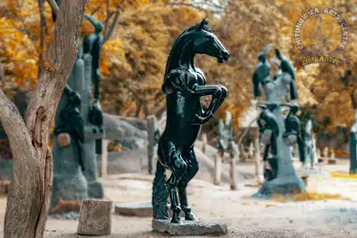
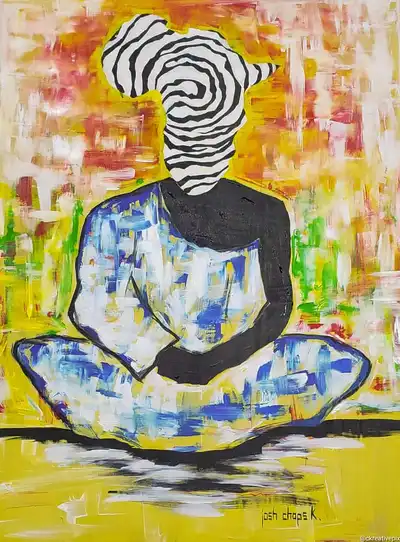
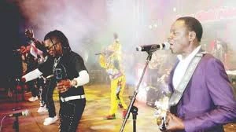
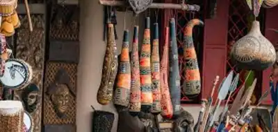
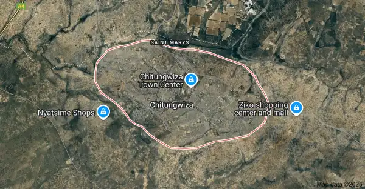

Horse Stone Sculpture at Chitungwiza Art Centre

An abstract painting by Josh Chaps K

Legendary musician Macheso performing at Tanza Joy Centre

Traditional artifacts crafetd by Chitungwiza Women Art CraftPoetry Awards held yearly in Chitungwiza
Visit
Birth of Chitungwiza Art Scene
Chitungwiza, a high-density suburb near Harare, emerged as an artistic hub due to limited formal employment
opportunities. Many residents turned to visual and performing arts as a livelihood, transforming poverty into creative
expression. And exposure to art from childhood, with communities like Unit O in Seke township becoming sculpture hubs, fostered a
culture of creativity. Local legends such as musician Alick Macheso and sculptor Sylvester Mubayi inspired generation.
Launched in 1997 as a UNDP-funded poverty alleviation initiative under Zimbabwe’s Ministry of Education, Sports, and
Culture, the centre aimed to empower youth and nurture talen. With Veteran sculptors like Lazarus Takawira and Fanizani
Akuda mentoring emerging artists, creating a lineage of craftsmanship. By 2015, the centre housed over 200 artists,
including women and disabled practitioners.
Demography

Chitungwiza, Zimbabwe's third-largest and fastest-growing urban center, had
a population of 371,244 as of the 2022 census, and is a dormitory city of
Harare
 Chitungwiza Art Chamber of Commerce
Chitungwiza Art Chamber of Commerce